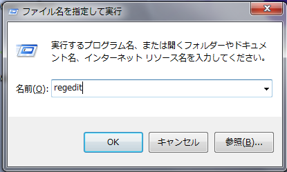
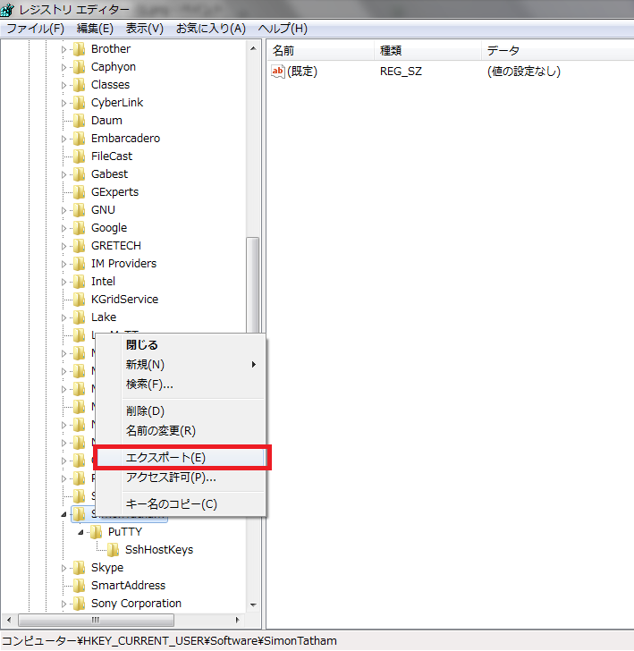

こんにちは。明月です。
サーバの種類は色々がありますが、代表的には「Linux server」と「Window server」があります。「Window server」なら「Window」のOSから「Remote desktop」という基本プログラムを利用して接続します。
「Linux」の場合は「SSH」プロトコルで接続しなければならないですが、「Window」では基本プログラムがないですね。
「SSH」で接続するプログラムが様々なことがありますが、その中で機能は少ないけれども、すごく軽くて簡単に使える「putty」があります。
link - https://www.putty.org/
ダウンロード - https://the.earth.li/~sgtatham/putty/latest/w64/putty.exe
上のリンクでダウンロードして実行しましょう。
「Putty」はすごく簡単なプログラムなので特に説明することがないですね。
基本設定のほどを説明します。
サーバをインストールする時に文字でエラーが発生しないようにほとんど英語でインストールしますが、たまに日本語バージョンでインストールする時があります。
その時に文字化けが発生するときがあります。
それを解決する方法はエンコーディング種類を変更すればできます。
「Window」=>「Translation」項目でキャラクターセットを変更すればよいです。
そして「putty」の基本色は黒い背景で白い文字が基本ですね。ディレクトリやファイルタイプによって色が変わります。
また、黒い背景で白い文字を変更したいなら、変更ができます。
格納したディフォルト設定は「regedit」で削除ができます。もちろんバックアップもできますね。

「コンピューター\HKEY_CURRENT_USER\Softeare\Simon Tatham」を削除すれば、設定がすべてなくなるし「エクスポート」するとバックアップができます。

- [Ubuntu] Chromeをインストールする方法2019/11/06 19:48:19
- [CentOS] YUMについて、YUMが出来ない場合処理方法2019/11/05 07:17:58
- [CentOS] MariaDB(Mysql)をインストール2019/11/04 18:35:10
- [CentOS] FTPインストールする方法(vsftpd)2019/11/01 07:29:57
- [CentOS] SAMBAインストール方法2019/10/30 07:38:57
- [CentOS] PHPインストールする方法2019/10/29 20:09:03
- [CentOS] ApacheとTomcatの連携2019/10/29 07:28:33
- [CentOS] Tomcat インストール方法2019/10/28 22:38:56
- [CentOS] Java インストール2019/10/28 00:22:32
- [CentOS] apacheをインストールする方法2019/10/25 21:43:27
- [Linux] ディスク使用率チェック(df, du, lsof)とdfバグを解決方法2019/10/24 21:46:31
- [CentOS] Wheel設定2019/10/23 23:53:40
- [CentOS] システムの文字セット変更2019/10/21 16:58:39
- [CentOS] Vim編集ツールをインストールする方法2019/10/21 00:24:44
- [Linux] Putty使用方法2019/10/20 00:42:54
- [C#] 58. ウィンドウフォーム(Window form)を作成する方法、そしてウィンドウメッセージとキュー2021/10/27 20:35:44
- [Design pattern] 2-3. ブリッジパターン(Bridge pattern)2021/10/27 20:32:21
- [Design patten] 2-2. コンポジットパターン(Composite pattern)2021/10/27 20:30:54
- [Design pattern] 2-1. アダプターパターン(Adapter pattern)2021/10/26 19:12:40
- [Project design] プログラム最終テスト - ST(System test(Standard, Scenario))2021/10/26 19:10:07
- [Project design] プログラム結合テスト - IT(Integration test)2021/10/25 20:12:17
- [Python] Seleniumライブラリを使う方法(自動ウェブテスト、ウェブスクレイピング)2021/10/25 19:29:00
- [Design pattern] 1-5. プロトタイプパターン(Prototype pattern)2021/10/22 19:35:45
- [Project design] プログラム検証とテスト - Unitテスト2021/10/22 19:34:09
- [C#] 57. コーティング規約2021/10/21 18:57:02
- [C#] 56. 値の初期化及び基本データ値(default)を設定する方法、そして原始データのnull処理、?と??の使い方2021/10/21 18:54:41
- [C#] 55.namespaceとusing、そしてpartialの使い方2021/10/21 18:51:39
- [C#] 54. Reflection機能を使い方 - Attribute2021/10/20 19:29:31
- [Project design] プログラム制作(コーディング) - クラス作成方法2021/10/20 19:28:09
- [C#] 53. Reflection機能を使い方 - Propertyとevent2021/10/19 21:02:58